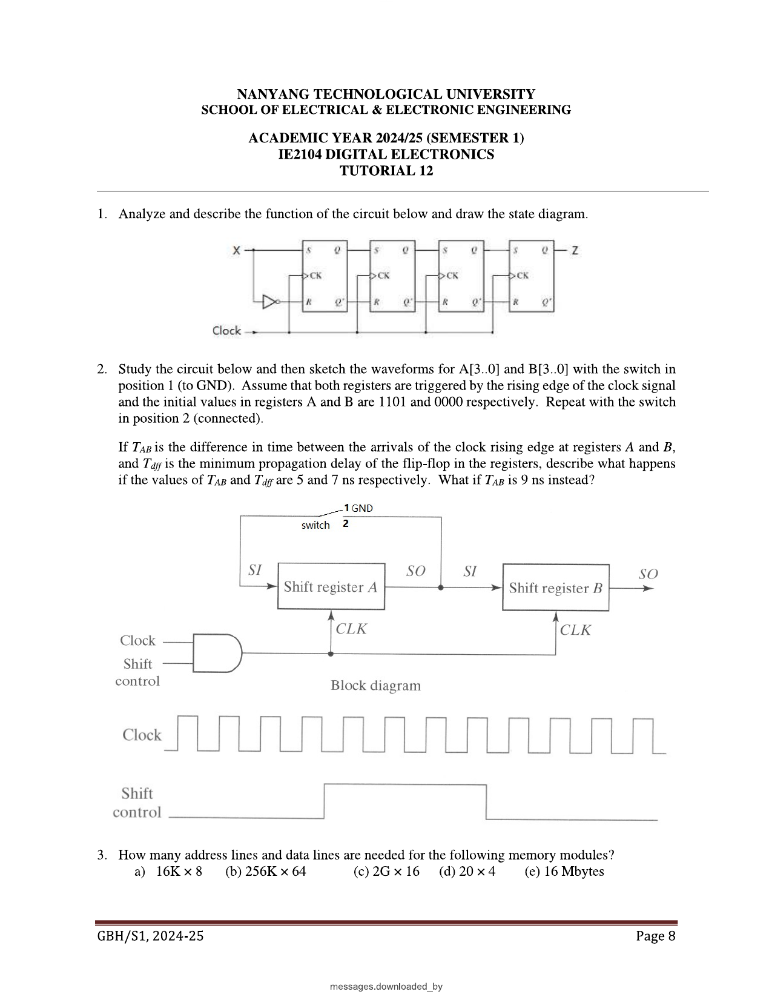

Week 12 — Counters & Shift Registers
Lecture: "Sequential Circuits" (pages 17–59) · Tutorial 11 Q3–Q5 · Tutorial 12 Q1–Q2
📚 Slides, Slowly
Counters: FSMs with a "boring", fixed cycle of states
A counter is just a special case of everything you learned in Weeks 9–11 — a synchronous sequential circuit — where the state diagram happens to be one big cycle through a fixed set of patterns, with no external input choosing the path. A counter cycling through m distinct states is called a modulo-m (or "divide-by-m") counter.
| Synchronous counter | every flip-flop shares the same clock signal directly — all bits update at exactly the same instant. |
|---|---|
| Asynchronous (ripple) counter | only the first flip-flop is driven by the real clock; each subsequent flip-flop is clocked by the previous flip-flop's output changing. Cheaper (less logic), but the state change "ripples" through stage by stage rather than happening all at once. |
The toggle pattern behind a 4-bit binary counter
A plain n-bit binary counter (counting 0,1,2,…,2n−1,0,…) has an elegant, recognisable toggle condition: each bit toggles exactly when every bit below it is currently 1 (that's the instant a "carry" would ripple up into it, exactly like adding 1 by hand).
Built with T (or J=K tied together) flip-flops, this becomes literally just an AND-gate chain feeding each successive toggle input — one of the cleanest circuits in the whole course.
Asynchronous (ripple) counters: cheaper, but with a catch
Since each stage's clock is really just the previous stage's Q output, you can build an n-bit ripple counter from n toggle flip-flops with no extra gating at all — genuinely just flip-flops chained together. The catch: because each stage only starts changing after the previous one has physically finished, a ripple counter's outputs pass through brief, unwanted intermediate patterns (transient glitches) on their way to the "real" next count, especially visible on a wide counter's timing diagram right after a multi-bit rollover (e.g. 0111→1000, where every single bit changes, one stage at a time, rippling all the way up). If those outputs are decoded by combinational logic downstream, that logic can briefly see a wrong, transient state — a direct real-world consequence of the propagation-delay ideas from Week 11.
BCD (decade) counters: truncating the cycle to 10 states
A 4-bit counter naturally has 16 states, but a BCD/decade counter needs to stop at 9 and wrap back to 0 — this needs slightly different flip-flop equations than the plain binary counter above, because the counter must "know" to skip states 10–15 entirely. I derived and verified the synchronous BCD counter's JK equations directly from its present/next-state table (states 0000 through 1001, with 1010–1111 treated as unused don't-cares):
I want to flag something directly: I initially misread the scanned slide's J1/K1 equations, and a computer check against the actual 10-row table immediately caught the error (J1 is not simply Q3Q0 — it needs the Q̄3 term, otherwise bit 1 would wrongly try to toggle again on the 8→9 transition). This is exactly why the "verify by direct computation" habit from earlier weeks matters even more here — a plausible-looking but subtly wrong equation is much harder to spot by eye than a wrong final answer.
The asynchronous version of the same BCD counter needs an extra trick: since states 0-9 don't correspond to a clean toggle condition the way a full 4-bit binary count does, most designs let it count naturally up through 1001 (9) and then use a small AND/NAND decoder watching for the otherwise-unreachable state 1010 to force an asynchronous clear back to 0000 — which is also exactly why a brief, real (if very short-lived) glitch can appear transiently on the outputs right at the rollover, before the clear takes effect.
Real chips: 74LS160 and 74LS190
| 74LS160 | 4-bit synchronous BCD counter with synchronous parallel LOAD, and two enables (ENP, ENT) that must both be high for the counter to actually count — bringing either low freezes the count (data-hold mode). RCO (Ripple Carry Out) goes high while the counter sits in its maximum state (9), specifically so multiple 74LS160s can be chained to count wider numbers. |
|---|---|
| 74LS190 | adds a Down-counting mode (direction chosen by D/Ū), asynchronous LOAD, and a MAX/MIN output flag. |
Recognising these two chips by name and by what their control pins do is squarely testable — they're the "real hardware" version of everything derived by hand above.
Gray code counters: only ever one bit changes at a time
A Gray code counter deliberately does not follow plain binary order — instead, consecutive states always differ in exactly one bit. This matters anywhere multiple bits are read by hardware that might sample them at very slightly different instants (e.g. a rotary position sensor) — with plain binary, a transition like 011→100 changes 3 bits at once, and if they're not all read at exactly the same instant, you can briefly read a completely wrong intermediate value; with Gray code, at most one bit is ever in flux, so the worst a mistimed read can do is be off by one step.
I derived the JK equations for a 3-bit Gray code counter (cycle: 000→100→101→111→110→010→011→001→000) directly from its present/next-state table via K-maps, and want to flag that the scanned slide's "simplified" equations were garbled in a way that didn't survive a direct verification check — here are the equations I confirmed, row by row, actually reproduce the correct 8-state Gray cycle:
Shift registers: no fixed cycle, just moving bits along
Unlike a counter, a shift register has no "correct" sequence of its own — it's simply a row of flip-flops where, on every clock pulse, each stage copies the value sitting in the stage before it, one position down the line. Its whole job is storing and shifting.
| SISO (Serial-in, Serial-out) | data enters and leaves one bit at a time — useful purely as a delay line, or for serial data transmission. |
|---|---|
| SIPO (Serial-in, Parallel-out) | bits enter one at a time but, once fully loaded, can all be read out simultaneously — the classic "de-serialize incoming data" building block. |
| PISO (Parallel-in, Serial-out) | the reverse — load a whole word at once, then shift it out one bit at a time (e.g. to send over a single wire). |
| PIPO (Parallel-in, Parallel-out) | effectively just a clocked register/buffer — load and read a whole word at once. |
Clock skew in a shift register chain: a very concrete danger
If the clock edge arrives at a "destination" stage even slightly before it arrives at the "source" stage feeding it (skew, Week 11), the destination can capture data that has already changed to the next value — silently loading the wrong bit, one step ahead of where it should be. This is exactly the same setup-time-violation idea from Week 11, just now visualised as data visibly leapfrogging a stage in a shift chain rather than as an abstract nanosecond budget.
Shift register applications worth remembering
| Parallel-to-serial conversion (UART) | lets a computer's wide, parallel internal data bus talk to a device that only accepts one bit at a time (a classic real-world PISO/SIPO pairing). |
|---|---|
| Arithmetic shifting = fast multiply/divide by 2 | shifting a binary number left by one bit doubles it; shifting right halves it (with rounding). "Logical" shift fills the vacated bit with 0 (correct for unsigned numbers); "arithmetic" shift instead preserves the sign bit on the right shift (needed for signed 2's complement numbers, Week 1). |
| Pseudo-random pattern generator (PRBS) | feed the XOR of two tapped bits back into the serial input — an n-bit shift register built this way can cycle through 2n−1 distinct patterns before repeating, useful for generating test patterns. |
Ring counters and Johnson (twisted-ring) counters
| Ring counter | a shift register with the last stage's output fed straight back to the first stage's input, with exactly one flip-flop preset to 1 and the rest cleared to 0 — that single 1 just walks around the ring forever. An n-bit ring counter gives exactly n usable states (one "hot" bit position each). |
|---|---|
| Johnson (twisted-ring) counter | identical idea, but the complement of the last stage feeds back to the first stage instead. This small change means it takes twice as long to return to the start — an n-bit Johnson counter cycles through 2n states rather than just n, using the same number of flip-flops as a ring counter of the same length. |
Both are popular precisely because decoding "which state am I in" from their outputs needs far simpler gates than decoding an ordinary binary counter's state.
🔗 Tutorial 11 (Q3–Q5) & Tutorial 12 (Q1–Q2), Linked Back
Draw the configurations of 4-bit asynchronous and synchronous straight sequence counters.
Directly from the Slides section: the asynchronous version is 4 toggle flip-flops chained so that each stage's clock input is literally the previous stage's Q output (no shared clock, no extra gates). The synchronous version instead ties every flip-flop's clock to the same shared clock line, and instead builds the "ripple carry" logic explicitly with AND gates: Q0 always toggles; Q1's toggle input is Q0; Q2's is Q0Q1; Q3's is Q0Q1Q2 — the odometer-wheel pattern from the Slides section, made explicit in gates instead of implicit in clocking order.
Implement an asynchronous counter with a straight sequence of 0000 through 1011 (0–11, 12 states).
Same trick as the BCD counter above, just truncated at a different point: build a plain 4-bit asynchronous binary counter (Q0 through Q3, each toggling from the previous stage), then add a small AND/NAND gate watching for the otherwise-unreachable state 1100 (the count that would come immediately after 1011) and feed its output into every flip-flop's asynchronous Clear. The moment the counter would try to advance past 1011 into 1100, that state is decoded instantly and clears everything straight back to 0000 — the counter effectively never gets to "rest" in 1100, it only ever glimpses it for a brief clear-triggering instant (exactly the same "decode-and-clear" idea as the BCD counter, just watching for 1100 instead of 1010).
Design a synchronous counter that counts in the sequence 0, 1, 5, 2, 6, 0, … using (a) T flip-flops, (b) D flip-flops.
In binary (3 bits, since the largest value is 6): 000 → 001 → 101 → 010 → 110 → 000 → … (states 011, 100, 111 are never used — don't-cares). I built the full present/next-state table and derived both flip-flop versions by K-map, then verified every single transition by direct computation:
Notice how much simpler the D-flip-flop version's derivation is (D is literally just "the next-state bit", read straight off the table, no separate excitation-table step) — a good concrete reminder of the general trade-off from Week 8: D flip-flops make design easier, T/JK flip-flops sometimes give a smaller final gate count.

Analyze and describe the function of the circuit shown, and draw its state diagram.
The circuit is 4 SR-latch-based stages wired in a simple shift chain, with the last stage's output fed back through an inverter into the first stage's input. That single inverted-feedback detail is the entire signature of a Johnson (twisted-ring) counter, from the Slides section above. With 4 stages, expect a cycle of 2×4=8 distinct states, each one produced by shifting the previous state right by one position and inserting the complement of what fell off the end — e.g. starting from 0000: 0000→1000→1100→1110→1111→0111→0011→0001→0000 (the classic Johnson-counter "walking ones then walking zeros" pattern), which you can confirm by tracing the shift-with-inverted-feedback rule one clock pulse at a time.
Sketch the waveforms for two cascaded 4-bit shift registers A and B (initial values 1101, 0000) with the switch in "GND" position, then "connected" position; describe the effect of clock skew (TAB) versus flip-flop propagation delay (Tdff).
With the switch to GND, register A's serial input is permanently held at 0 — so A simply shifts its initial value 1101 rightward, feeding in 0's behind it, while its output SO feeds into B's SI, so B fills up with a delayed copy of whatever bits shift out of A. With the switch in "connected" position, A's own output SO is fed back into its own SI — turning A into a genuine ring counter (Slides section above), continuously recirculating its original 1101 pattern instead of losing it.
TAB vs. Tdff: this is a direct instance of the clock-skew danger described in the Slides section. If TAB (the clock skew between when the edge arrives at A vs. B) is smaller than Tdff (the flip-flop's own minimum propagation delay) — as in the TAB=5ns, Tdff=7ns case — register B's clock edge arrives before A's output has had a chance to change, so B correctly captures A's old bit, exactly as intended. But if TAB is larger than Tdff (the TAB=9ns case), A's output has already changed to its new value by the time B's own edge arrives, so B ends up capturing the wrong (already-shifted-again) bit — the shift register silently skips a bit position. This is precisely why real synchronous designs try to keep clock skew as small as possible relative to the fastest possible logic delay in the chain.
✍️ Write This Down
Copy these into your own notes:
- Binary counter toggle rule: bit i toggles exactly when every bit below it is 1 (the "carry" condition) — trivially built from an AND-gate chain with T flip-flops.
- Synchronous counters share one clock across every stage; asynchronous (ripple) counters chain each stage's clock from the previous stage's output — cheaper, but prone to transient glitches after a multi-bit rollover.
- Truncating a counter to a non-power-of-2 length (BCD, or any custom length): let it count normally, decode the first unreachable/unwanted state, and use that to force an asynchronous Clear.
- Gray code: consecutive states differ in exactly one bit — used wherever multi-bit values might be sampled at slightly different instants.
- Shift register modes: SISO, SIPO, PISO, PIPO — named directly for how data enters and leaves.
- Ring counter: last stage feeds straight back to the first (n states). Johnson/twisted-ring counter: last stage's complement feeds back instead (2n states) — same flip-flop count, double the states.
- Clock skew in a shift chain: if skew exceeds the flip-flop's propagation delay, the receiving stage can capture an already-updated (wrong) bit — directly the Week 11 setup-time-violation idea, made visible as a lost/skipped bit.
- Always verify "simplified" flip-flop equations by plugging them back into the full present/next-state table — two separate slide-reading errors were caught exactly this way while building this page.
🟥 Redstone Build: Counters & Shift Registers
Counters and shift registers are both extremely well-trodden ground in redstone — you're likely to recognise both the moment you see them.
Build 1 — A 3-bit ripple (asynchronous) binary counter
- Chain 3 of your T flip-flops (Week 8/9 builds) so that each stage's clock input is wired directly from the previous stage's output changing — no shared clock line at all beyond the very first stage.
- Pulse the first stage with a single lever toggle repeatedly, and watch the classic binary count 000→001→010→...→111→000 appear on 3 lamps, with each higher bit visibly "waiting" for the one below it to flip.
- Compare its speed to a synchronous version (all 3 stages sharing one clock signal, with explicit AND-gated toggle inputs per the odometer rule) — the ripple version will show a very slightly delayed, staggered lamp update on multi-bit rollovers (e.g. 011→100), while the synchronous version updates all 3 lamps in the same tick.
Build 2 — A 4-bit shift register (SISO), then a ring counter
- Chain 4 D-latches (Week 8) so each stage's output feeds directly into the next stage's input, all sharing one clock.
- Feed a lever pattern in one bit per clock pulse, and watch it visibly "travel" down the row of lamps over 4 clock pulses — a direct physical picture of what "shifting" means.
- Now feed the last stage's output back into the first stage's input (instead of a fresh lever bit): preset exactly one stage to 1 (others to 0), and watch that single lit lamp walk around the ring forever — a genuine, working ring counter.
- Stretch goal: add one inverter into that feedback path (turning it into a Johnson counter) and confirm you now get 8 distinct lamp patterns before it repeats, instead of just 4 — direct, countable proof of the "2n states instead of n" rule from the Slides section.